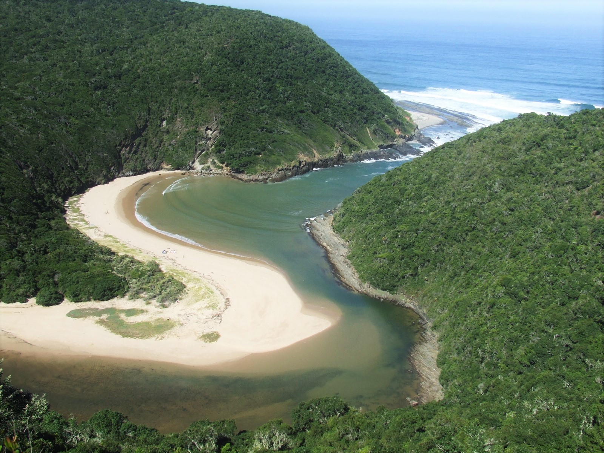

South Africa has 290 estuaries and 42 micro-estuaries, which have been classified into 22 estuarine ecosystems and 3 micro-estuary types. This high diversity of estuary types stems from the country’s diverse climatic, oceanographic and geological drivers. Four biogeographical regions characterise the South African coast; namely the Cool Temperate (Orange to Ratel), the Warm Temperate (Heuningnes to Mendwana), the Subtropical (Mbashe to St Lucia) and the Tropical (uMgobezeleni to Kosi) (Emanuel et al. 1992; Harrison 2002; Turpie et al. 2000). Rainfall in these regions varies significantly from less than 100 mm along the arid west coast to about 1 200 mm along the east coast.

In South Africa, there are circa 176 estuarine-associated plant species, the majority (56 species) of which are associated with salt marsh habitat. Estuary habitats in South Africa cover a total area of 103 500 ha, with reeds and sedges (17 500 ha) the dominant habitat type. On a bioregional scale, supratidal salt marsh dominates in the Cool temperate region (6 300 ha) and Warm temperate region (2 400 ha), reeds and sedges in the Subtropical region (10 800 ha), and swamp forest in the Tropical region (2 000 ha). Estuaries with the largest extent are St Lucia (44 800 ha), Groot Berg (8 000 ha) and Knysna (2 400 ha). The number of macrophyte species per estuary varied from 1 to 54 (recorded at Kosi). Macrophyte species richness in estuaries of the Cool and Warm Temperate region is higher than that in the Subtropical and Tropical region. Macrophyte species are distributed amongst 58 families . Only 66 plant species occurred in five or more estuaries in the country.
Approximately 50 of the 150 estuarine-associated fish species that regularly occur in estuaries are Southern African endemics of which 20 are exclusively found in South African waters with some species confined to only a few systems. For example, the iconic Knysna seahorse only occurs in three estuaries (Knysna, Swartvlei, Keurbooms), the Bot River Klipvis in two estuaries (Bot/Kleinmond and Klein) and the Estuarine Pipefish in five estuaries (historically Bushmans, Kariega, Kasouga, East and West Kleinemonde but currently only confirmed in first two systems).
The importance of South Africa’s estuaries for resident and migratory waterbirds has long been recognised. A total of 35 bird species are considered highly dependent on estuaries as more than 15% of their regional population is found in these systems. The 118 waterbird species found in South African estuaries belong to eight orders, 25 families and 73 genera. While most species are found throughout the coast, there are some species which are predominantly confined to the west of the country, and in general, species richness increases towards the east, into the subtropical and tropical regions.
Even important ‘bait’ invertebrate species Sandprawn (Callichirus kraussii), Mud Prawn (Upogebia africana) and Macrobrachium petersii are southern African endemics, while the freshwater Sand-shrimp (Palaemon capensis) is a South African endemic.
Our estuarine biodiversity underpins food security and economic opportunities, and is part of the deep cultural and spiritual values of South Africa’s coast. The 2025 National Biodiversity Assessment identified key estuarine ecosystems and benefits at risk, and high lights priority actions to safeguard life and livelihoods, and maintain the many benefits of South Africa’s exceptional biodiversity
of 22 ecosystem types
Threatened
of 22 ecosystem types
Well Protected
of 22 ecosystem types
Not protected
of estuarine area are
Heavily degraded to Critically degraded
Ecosystem assessments
The Estuarine Realm is one of the most threatened in South Africa, in terms of both number of ecosystem types and by area. Of South Africa’s 22 estuarine ecosystem types, 59% are threatened with 23% Critically Endangered, 18% Endangered and 18% Vulnerable. Of total estuarine area, 99% is threatened with 1% Critically Endangered, 57% Endangered and 41% Vulnerable.
Overall, Cool Temperate and Subtropical ecosystems are at higher risk of ecosystem collapse. The most threatened ecosystem functional groups are Estuarine bays, Estuarine lakes, Large fluvially dominated, Large temporarily closed, and Arid predominantly closed types. Unless collaborative efforts are made to improve ecological condition in these functional groups, the vital ecosystem services and benefits they provide are at risk.
More than 80% of South Africa’s 22 estuarine ecosystem types now have some representation in the protected areas network, but only 1% are Well Protected. Large Fluvially Dominated, Predominantly Open, Estuarine Bay (Subtropical), Large temporarily closed and Arid predominantly closed are the most Poorly Protected ecosystem functional groups.
Increasing the extent of South Africa’s estuarine protected area estate will contribute to improving ecosystem protection levels. Importantly, however, the ecological condition of estuaries in protected areas also needs improvement for ecosystem types to advance to Well Protected status. For example, 32% of types and 10% of area can be well protected if fishing effort in just 3 estuaries are better controlled – Langebaan, Knysna and Kosi. Estuarine conservation also needs to better consider and involve people, diversify protection models, and address issues that undermine legitimacy. The ongoing efforts to develop OECMs and stewardship approaches for estuaries present an opportunity for bottom-up conservation models to be developed that can be used to protect and arrest the ongoing decline in Blue Carbon habitats.
In the estuarine realm, 22% of ecosystem types are both highly threatened and under protected, prevalent on the Cool Temperate and Subtropical biogeographical regions. These include the following five ecosystem types:
Cool Temperate Arid Predominantly Closed (Buffels, Swartlintjies, Spoeg, Groen, Sout (Noord), Wadrift)
Cool Temperate Estuarine Lakes (Verlorenvlei, Zeekoei, Bot/Kleinmond, Klein)
Cool Temperate Large Fluvially Dominated (Orange)
Cool Temperate Predominantly Open (Olifants, Groot Berg, Uilkraals)
Subtropical Estuarine Bay (Durban Bay)
Condition
More than 54% of South Africa’s estuaries are relatively healthy, but this amounts to only 18% of total estuarine extent, comprised mostly of small estuaries. Concerning overall, more than 70% of estuarine area is significantly modified.
This represent an overall 1% decline in Natural/Near Natural estuaries and 7% increase in degraded extent. Overall, Cool Temperate and Subtropical ecosystems are the most degraded. The most degraded functional groups are Estuarine bays, Estuarine lakes, Large fluvially dominated, Large temporarily closed, and Arid predominantly closed types.
Important ecological processes are under severe pressure and with resultant reductions in ecosystem productivity, food security, fisheries livelihood, property values and recreational enjoyment.
Estuaries require increased protection and interventions across multiple sectors to arrest the ongoing decline. Key concerns are escalating gillnetting pressure, declining water quality, increased flow reduction, and land-use change in the estuarine functional zone (mining & farming).
There are many interacting pressures cumulatively affecting estuarine ecosystems and species. The main pressures impacting estuarine biodiversity include escalating gillnet pressure, declining water quality, increased flow reduction and land-use change in the estuarine functional zone (from coastal development, mining & farming).
{kind=link}
Pressures
Pressure evaluation shows that a third of freshwater flow no longer reaches the coast (22% of systems severely impacted). Wastewater discharges amount to about 655 000 m3/d (32% of estuaries under severe pollution pressure), with harmful algal blooms (HABs) now recorded in 18% of estuaries in response to declining water quality. Estuaries, especially in KwaZulu-Natal and Wild Coast, are under severe pressure from illegal gillnetting, with systems under severe pressure increasing from 15% to 21% to 28% between 2011, 2018 and 2025 (75%, 78% and 85% of area), significantly compromising the multiple benefits derived from estuaries. Over 22% of estuaries are also subjected to severe habitat modification.
Overall multiple interventions are required to avoid further decline in health. These include protection of freshwater inflow to estuaries and the sea, restoration of water quality, reduction in fishing effort and avoidance of mining, infrastructure development and crops in the estuarine functional zone.
The impacts of cumulative pressures also warrant consideration at multiple scales, particularly in evaluating the impacts of expanding and diversifying ocean economy activities. Failure to account for indirect and cumulative impacts will mean that potential impacts are missed and poor spatial planning and decisions are likely, with negative impacts on people and the environment.
{kind=link}
Species assessments
Of the 66 species included in this assessment, 18 (27%) are threatened with extinction. While this finding corresponds well with the ecosystem assessment where a high proportion of ecosystems are highly threatened, it is based on a limited set of species assessments that include a high proportion of range restricted endemics, economically important species or habitat forming species. Of the groups considered, only birds were comprehensively assessed. Future assessments need to include all representatives of a taxonomic group to remedy this bias.
Increased extinction risk for estuarine species is attributed to multiple pressures, with overfishing (including by recreational, small-scale, commercial and illegal fisheries), pollution, flow reduction, biological invasions, coastal development, agriculture and mining contributing most to the threatened status of estuarine species.
Responses
South Africa has a strong policy and legislative framework to protect and manage estuaries. Excellent progress has been made in the management of estuaries in water and land use/planning sector. Department of Water and Sanitation (DWS) has determined the ecological water requirements of all estuaries, with 100% of these being subject to the “Classification” of freshwater resources. In addition, over 20% of estuaries have Estuary Management Plans in various stages of completion under the guidance of DFFE, provinces and conservation agencies. These noteworthy progresses since 2018 play a critical role in ensuring estuary health and the multiple benefits that society derives from them. These measures are proactive in that they set management objectives for estuarine resources on the strategic level through the engagement of society in the decision-making process. Unfortunately, there has been a deterioration in the management of extractive use in estuaries, with sand, mineral and diamond mining key concerns.
There is an urgent need to strengthen multilateral arrangements between sectors dealing with Environment, Water, Fishing and Mining to ensure optimum resource allocation. In many of the above sectors, management measures/processes do not meet biodiversity requirements, e.g. freshwater flow allocation to the uMlalazi Estuary in the Thukela Marine Protected Area (MPA) is not sufficient to prevent increased constricted/closed mouth conditions developing during low flow periods with associated poor water quality resulting in low oxygen conditions. Given that estuarine management straddles multiple sectors, a more robust intergovernmental engagement could assist in ensuring a balance in sectoral requirements and preventing mandate conflict between departments.
Availability of cheap gillnets online (e.g. Temo, Takelot, Shein) have led to exponential increase in estuary fishing pressure. This indiscriminate fishing method catches juvenile fish, macro invertebrates, birds, turtles and terrapins, water monitors and crocodiles. Authorities launched DFFE Gillnet Reporting App (OCIMS) to monitor illegal catches and established a well co-ordinate compliance network in KZN. An example of success achieved is that 80% of nets are retrieved before they catch anything and for every 39 fish caught per illegal net retrieved 21 is released alive. Overall catches peaked in 2023/24. Compliance initiatives needs to be supported by community education and awareness programmes, increase customs control (stop imports), and collaboration with online retailers to foster self-regulation. The retailer Macro is example of self-regulation as they removed gillnets form their stock once the company became aware of the cascading impacts on estuarine and coastal ecosystems.
Investment is needed in solutions to restore estuarine ecological infrastructure to strengthen climate resilience and sustain ecosystem services. The Kunming-Montreal Global Biodiversity Framework makes restoration and protection of critical ecosystems an imperative at a global scale. Restoration projects has been initiated at a few key estuary sites in South Africa, e.g. St Lucia, Groot Berg, Swartkops, Mlalazi. Ongoing research have also identified critical systems (e.g. Orange, Olifants, Klein Brak, Gamtoos) that will ensure the best return on investment. DFFE and the provincial authorities are engaging in an ‘Estuary Restoration Strategy’ that focuses on degraded and novel systems with an emphasis on the larger systems of high biodiversity importance and the socially importan

Key publications
Van Niekerk, L., Adams, J.B., Lamberth, S.J., MacKay, C.F., Taljaard, S., Turpie, J.K., Weerts S.P. & Raimondo, D.C., 2019 (eds). National Biodiversity Assessment 2018 Technical Report Volume 3: Estuarine Realm. CSIR report. South African National Biodiversity Institute, Pretoria.
van Niekerk, L., S. Taljaard, S. J. Lamberth, J. B. Adams, S. P. Weerts,and C. F. MacKay. 2022. “Disaggregation and Assessment of estuarine pressures at the country-level to better inform management and resource protection the South African experience.” African Journal of Aquatic Science, April. https://www.tandfonline.com/doi/abs/10.2989/16085914.2022.2041388.
Adams, J. B., S. Taljaard, L. van Niekerk, and D. A. Lemley. 2020.“Nutrient Enrichment as a threat to the ecological resilience and health of South African microtidal estuaries.” African Journal of Aquatic Science 45 (1-2): 23–40. https://doi.org/10.2989/16085914.2019.1677212.